FFEL Alumni & Where are they now…
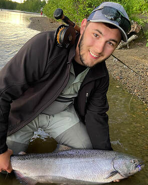
Will Samuel (MS 2023) When beavers get burned, do fish get fried? The role of beavers to mediate wildfire effects on Arctic grayling in boreal Alaska. Current position: Research Professional, International Arctic Research Center, Unversity of Alaksa Fairbanks
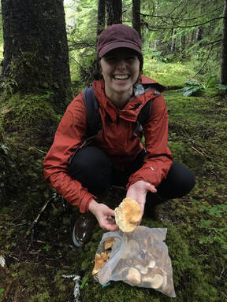
Claire Delbecq (MS 2023) Impacts of streamflow variability and antecedent conditions on the magnitude, timing, and form of watershed carbon and nutrient export from a coastal Alaskan watershed. Current position: Habitat Biolgist 2, Alaska Department of Fish and Game, Douglas, Alaska
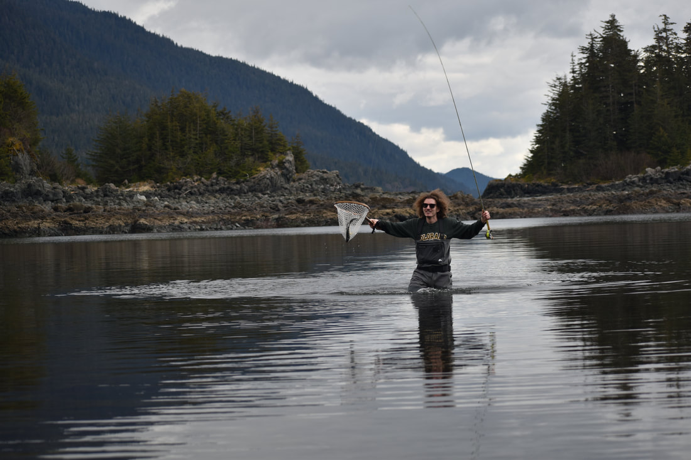
Kevin Fitzgerald (MS 2023) Environmental controls on foraging and growth of juvenile salmonids in a southeast Alaska watershed. Current position: Research Biologist, U.S. Forest Service, Pacific Northwest Research Laboratory, Juneau, Alaska
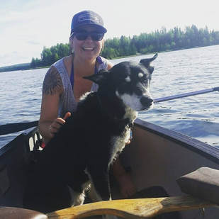
Olivia Edwards (MS 2023) Influence of freshwater processes on juvenile Chinook Salmon size, movement, and outmigration timing in the Chena River, Alaska. Current position: Habitat Biolgist 2, Alaska Department of Fish and Game, Fairbanks, Alaska
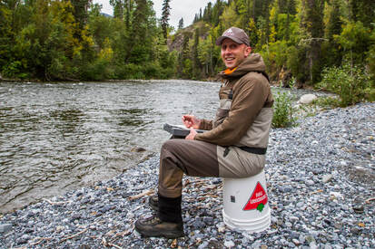
Dr. Chris Sergeant (PhD 2022) Freshwater pressures
on pacific salmon in the coastal watersheds of Alaska. Current position:
Research Scientist, School of Marine and Environmental Affairs,
University of Washington, Seattle, Washington
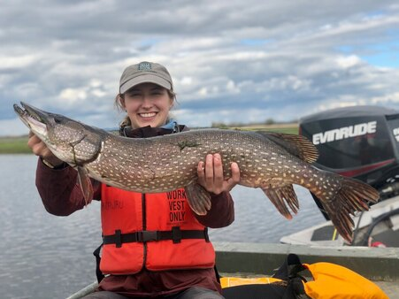
Taylor Cubbage (MS 2022) Intraspecific variation and
the leaping ability of Northern Pike (Esox lucius): implications for
invasion ecology and management. Current position: Fishery Biologist 1,
Alaska Department of Fish and Game, Anchorage, Alaska
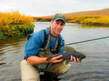
Dr. Stephen Klobucar (Post-doc; 2018-2021) Aquatic
ecosystem vulnerability to fire and climate change in Alaskan boreal
forests. Current position:
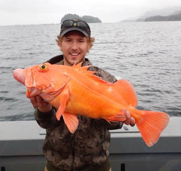
Donnie Arthur (MS 2020) The reproductive biology
of Yelloweye Rockfish (sebastes ruberrimus) in Prince William Sound and
the Northern Gulf of Alaska. Current position: Fishery Biologist 2,
Alaska Department of Fish and Game, Anchorage, Alaska

Chase Jalbert (MS 2018) Impacts of a top predator
(Esox lucius) on salmonids in southcentral Alaska: genetics,
connectivity, and vulnerability. Current position: Fisheries Geneticist
2, Alaska Department of Fish and Game, Anchorage, Alaska
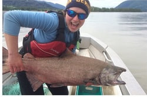
Kristin Neuneker (MS 2017) Migration patterns and
energetics of adult Chinook salmon (Oncorhynchus tshawytcha) in Alaska
rivers. Current position: Fisheries Biologist 2, Sport Fish Division,
Alaska Department of Fish and Game, Juneau, Alaska
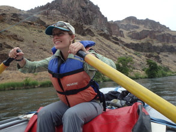
Chelsea Clawson (MS 2017) Using remote sensing,
occupancy estimation, and fine-scale habitat characterization to
evaluate fall chum salmon (Oncorhynchus keta) spawning habitat usage in
Arctic Alaska. Current position: Habitat Biologist 2, Alaska Department
of Fish and Game, Fairbanks, Alaska
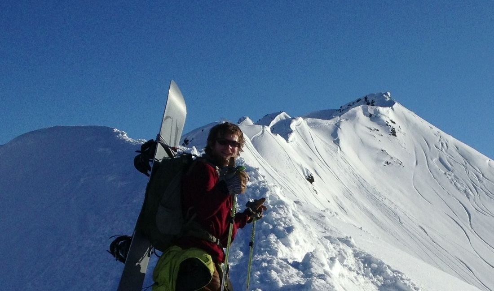
Eric Torvinen (MS 2017) Lake trout (Salvelinus
namaycush) otoliths as indicators of past climate patterns and growth in
Arctic lakes. Current position:
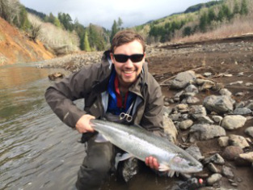
Dr. Morgan Sparks (MS 2016; PhD. Purdue University
2023) Climate, embryonic development, and potential for adaptation to
warming water temperatures by Bristol Bay sockeye salmon. Current
position: Research Fish Biologist, U.S. Forest Service, Rocky Mountain
Research Station, Boise, Idaho
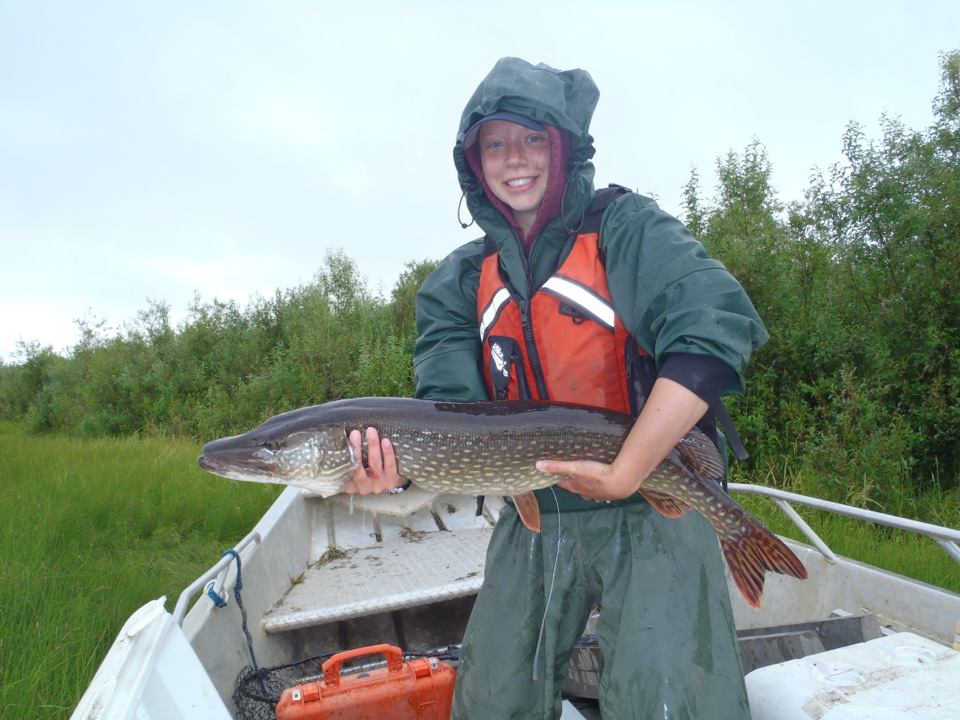
Allison Matter (MS 2016) A rapid assessment method
to estimate the distribution of juvenile Chinook salmon (Oncorhynchus
tshawytcha) in an interior Alaska river basin. Current position:
Fisheries Biologist II, Sport Fish Division, Alaska Department of Fish
and Game, Fairbanks, Alaska
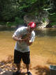
Dr. Brock Huntsman (Post-doc 2014-2015) Habitat
use and population dynamics of Chinook salmon in the Chena River basin,
Alaska. Current position: Fisheries Research Biologist, U.S. Geological
Survey, California Water Science Center, Sacramento, California
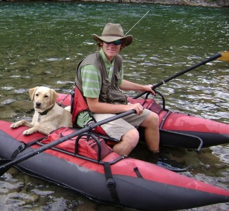
Dr. Kevin Fraley (MS 2015; PhD University of
Canterbury 2018) Seasonal movements and habitat use of rainbow trout in
the Susitna River basin, southcentral Alaska. Current position:
Fisheries Ecologist, Wildlife Conservation Society, Fairbanks,
Alaska